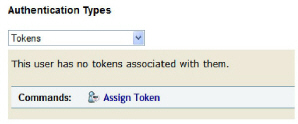
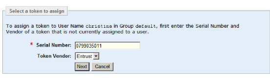
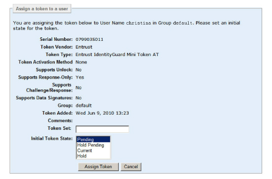

|
IdentityGuard Server 11.0 Administration Guide |
|
IdentityGuard Server 11.0 Administration Guide |
This procedure shows how to assign a token to an existing user on the user account page for the user.
To assign a token to a user from the user account page
1. Log in to the Entrust IdentityGuard Administration interface as the administrator.
 On the
Windows computer where Entrust IdentityGuard is installed
On the
Windows computer where Entrust IdentityGuard is installed
2. Click User Accounts on the menu bar.
3. Find a specific user in one of two ways:
● use the Go To Account tab (see To search for information about one user)
● use the Find Accounts tab (see To search for information about one or more users)
The View Account page appears.
4. Under Authentication Types on the user’s Account Information pane, select Tokens.
Token information and applicable command buttons appear.

5. Click Assign Token.
The Select a token to assign page appears.

6. Enter the Serial Number of the token you want to assign to the user.
You can find serial numbers of unassigned tokens by clicking Tokens and searching for *.
Note: Try to pick a token that
is in the same group as the user. For example, if the user is in the default
group, pick a token that is in the default group.
If you cannot find a token that is in the same group as the user, ensure
that the Move Tokens To User's Group
During Assignment policy is True.
This setting allows a token’s group to be changed to the user’s group
upon assignment. For details about setting this policy, see Configure
token policies.
To assign tokens to users in a different group, you must have permissions
to modify both the user group and the token group.
7. Click Next.
The Assign a token to a user page appears displaying information about the token.

8. On the Assign a token to a user page, do the following:
a. Optionally, select a different state from the Initial Token State list. See Grid card state overview for details. (The instructions apply equally to tokens.)
b. Optionally, fill out the Token Set field with a name for your token set. The name can be up to 255 characters. For details on token sets Token set overview (using multiple tokens).
Note: If there is no Token Set field, it is because the maximum number of token sets has been reached for the user. To increase this maximum, see Enabling multiple tokens per user through the token policy.
c. Optionally and if present, select a token name from the Token Set drop-down list. By selecting an existing token set, the token becomes related to all other tokens within the same set under the user’s account, and progresses through the state transitions with them. For details, see How token sets work.
Note: If a token
set is missing from the Token Set drop-down
list, it is because this set currently includes a token in the pending
or hold-pending state. Once the token progresses to the current or hold
state, the name reappears in the list.
If the Token Set drop-down
list itself is missing, it is because there are either no existing sets,
or all existing sets currently include tokens in the pending or hold-pending
state.
9. Click Assign Token.
The Account Information pane reappears and displays the new token information plus additional command buttons.